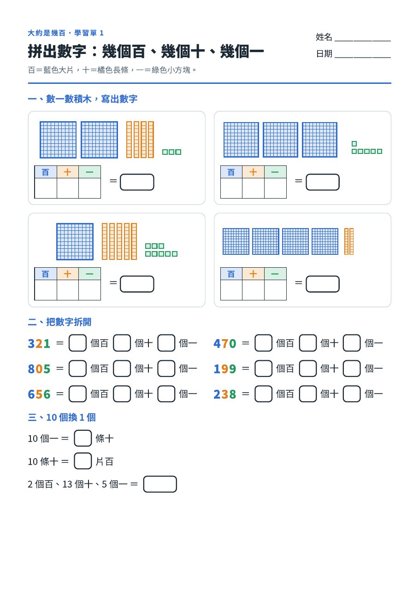
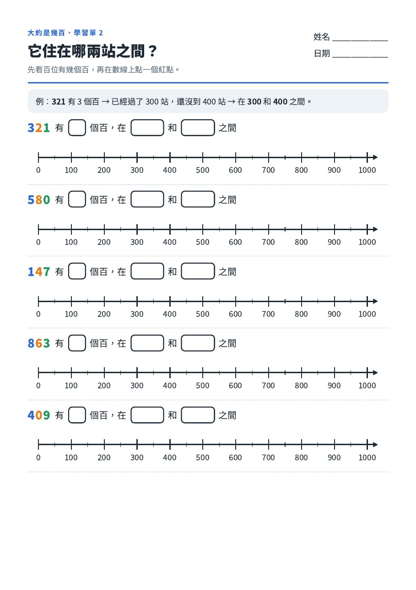
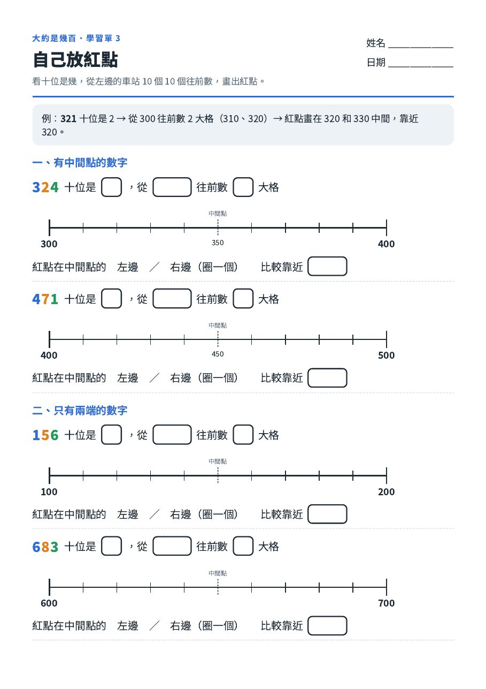
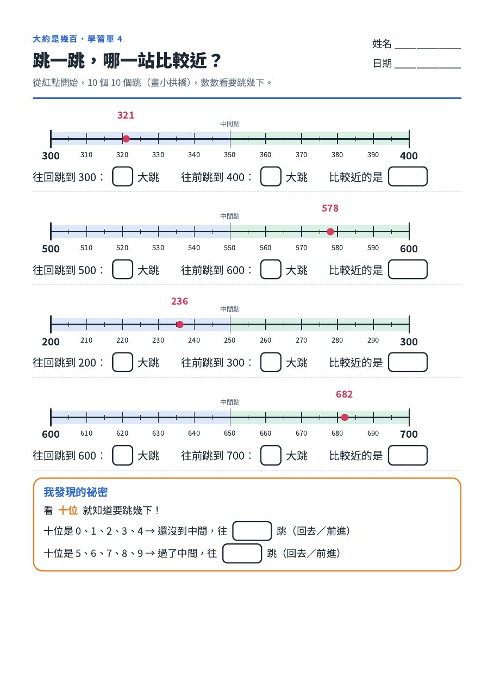
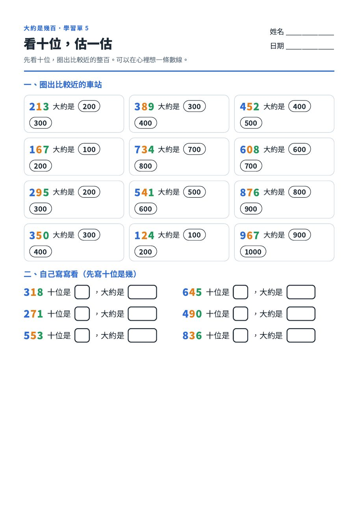
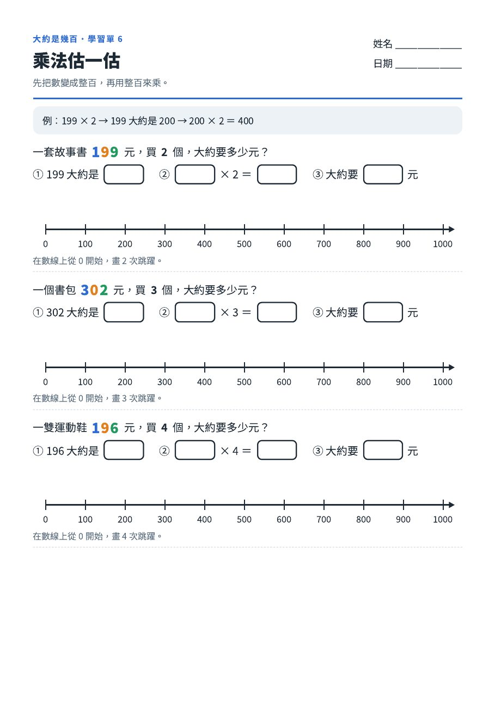
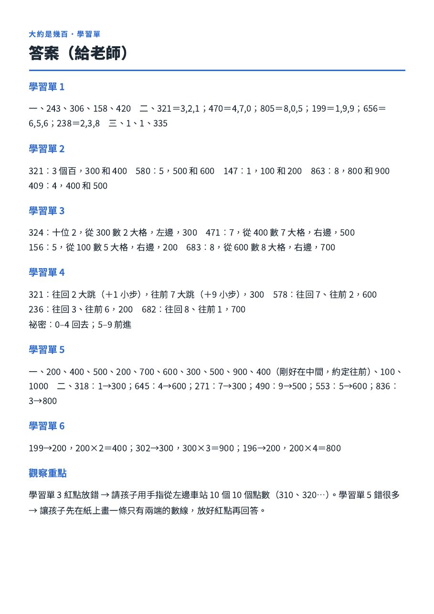

按 ＋ 放積木。1 片「百」= 10 條「十」，1 條「十」= 10 個「一」。
看百位有幾個百，就知道已經過了哪一站。點數線上正確的那一段。
數線放大了，每一大格是 10。看十位是幾，從左邊的車站 10 個 10 個往前數，點那一格放紅點。
數線上的數字
數線放大了，每一小格是 10。按按鈕看看，走到兩邊的車站各要跳幾下。
難度
提示
先把數變成「整百」，再用整百來乘，就很好算。
紙本學習單
6 張練習＋1 張答案，對應網頁的 6 關，A4 大小。
列印方法：按「下載 PDF」→ 在 iPad 跳出的分享選單選「列印」，或先存到「檔案」再打開列印。
學習單 1：拼出數字
學習單 2：在哪兩站之間
學習單 3：自己放紅點
學習單 4：跳一跳比遠近
學習單 5：看十位估一估
學習單 6：乘法估一估
答案（給老師）
給老師：設計說明與使用建議
估到「幾百」其實要四個前置能力，任何一個沒有，數線端點對孩子來說都只是兩個沒意義的數字。這份教材把它們拆開，一關只練一件事：
- 位值（第1關）：321 是 3 片百、2 條十、1 個一。積木直接放在定位板的欄位裡，數字和實物同步。觀察重點：孩子會不會從百開始放？10 個一時能不能主動換成 1 條十？
- 區間（第2關）：有 3 個百，就是已經走過 300、還沒到 400。答錯時會出現分段長條，藍色每段剛好 100。
- 自己放紅點（第3關）：把數線放大到 300～400，孩子要自己用十位決定紅點的位置：從 300 開始 10 個 10 個往前數。放錯時，畫面會從左邊車站一格一格跳給他看。刻度數字分三層慢慢拿掉：全部都有 → 只有中間點 → 只有兩端。最後再問「紅點在中間點的左邊還是右邊」，接到下一關。
- 距離（第4關）：紅點已經放好，比較往回、往前各要跳幾大格。
- 規則（第5關）：「先放紅點再選」模式會給一條只有兩端的數線，孩子先放紅點、說出在中間點哪一邊，才出現答案按鈕。穩定答對後，改成「在心裡想數線」，不給數線直接回答。
- 應用（第6關）：199×2 先變 200×2，數線上畫出 2 次 200 的跳躍，再對照真正的 199 跳兩次。
建議順序：第 3 關「只有兩端」連續 8 題以上第一次就放對，再進第 5 關「先放紅點再選」，最後才用「在心裡想數線」。每次 15 分鐘、只做 1–2 關。孩子回答時請他說出理由（「因為十位是 2，只要跳 2 下」），比答對更重要。